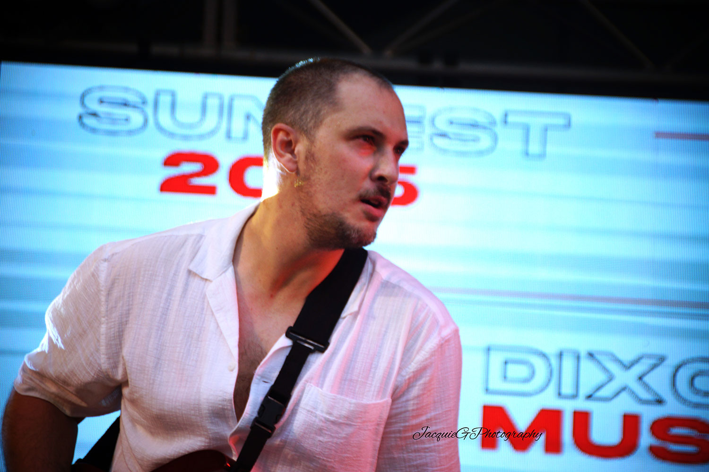

Who I Am
I’m a full-time musician from Sunbury, Victoria, dedicated to bringing heartfelt performances to stages, streets, and screens. With two self-produced solo albums released, I blend acoustic warmth with digital clarity—carving a sound that’s uniquely mine.
What I Do
From busking in the community to gigging at private events and venues, I share original music, classic covers, and moments that connect. I also produce, mix, and master music for other artists, with a deep passion for helping creatives sound their best.
My Vision
I want to inspire people through song. Whether live or online, I aim to build a movement of genuine connection, self-belief, and sound artistry. Let’s turn feelings into frequencies.